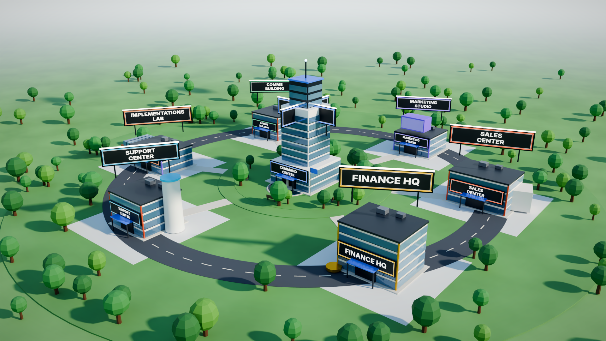

BCS Reports Hub
The seven-building Reports Hub campus rebuilt from its live 3D scene and rendered with Cycles: side-lit sun and soft shadows, reflective glass, bevelled edges, camera-facing rooftop signs, and distance haze.
